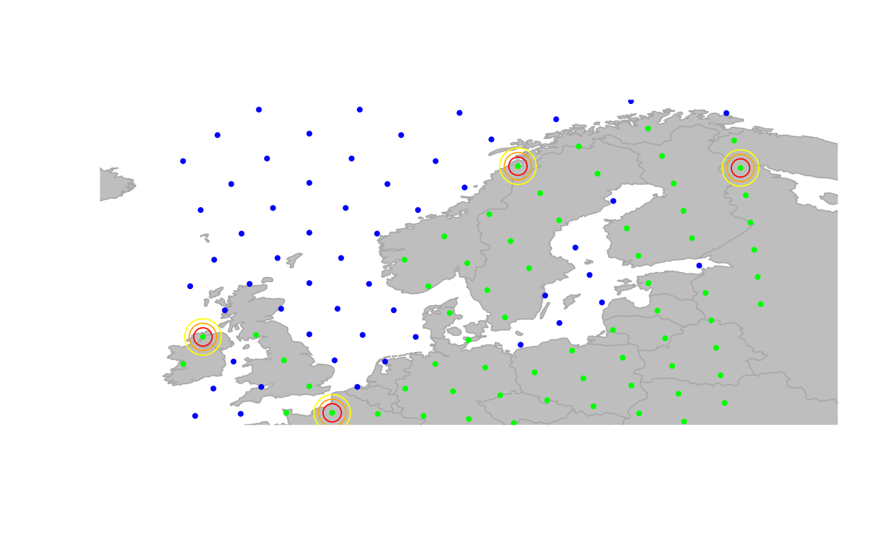

Plot a gData object.
plot-gData.RdVarious functions to plot a gData object: plot opens a
device and plots the object, while points plots the object on the
existing device. Plotting of gData object relies on plotting
the gGraph object to which it is linked, and then represent
the locations of the gData and/or the associated nodes.
Usage
# S4 method for gData,missing
plot(
x,
type = c("nodes", "original", "both"),
pch.ori = 4,
pch.nodes = 1,
col.ori = "black",
col.nodes = "red",
col.gGraph = NULL,
reset = FALSE,
sticky.points = TRUE,
...
)
# S4 method for gData
points(
x,
type = c("nodes", "original", "both"),
pch.ori = 4,
pch.nodes = 1,
col.ori = "black",
col.nodes = "red",
sticky.points = TRUE,
...
)Arguments
- x
a valid gData object. The gData object to which it is linked must exist in the global environment.
- type
a character string indicating which information should be plotted: original locations ('original'), associated nodes ('nodes', default), or both ('both'). In the latter case, an arrow goes from locations to nodes.
- pch.ori
a numeric or a character indicating the type of point for locations.
- pch.nodes
a numeric or a character indicating the type of point for nodes.
- col.ori
a character string indicating the color to be used for locations.
- col.nodes
a character string indicating the color to be used for nodes.
- col.gGraph
a (recycled) color vector for the associated gGraph object. If NULL, default color is used. Set to
NAor "transparent" to avoid plotting the gGraph.- reset
a logical stating whether the plotting area should be reset to fit the
gDataobject (TRUE), or should conserve previous plotting and settings (FALSE, default).- sticky.points
a logical indicating if added points should be kept when replotting (TRUE, default), or not (FALSE). In any case,
reset=TRUEwill prevent points to be redrawn.- ...
further arguments passed to
points.
Details
When sticky.points is set to TRUE, all operations performed on the
graphics like zooming or sliding the window can be performed without loosing
the gData plot.
See also
Different functions to explore these plots:
geo.zoomin,geo.zoomout,geo.slide,geo.back,geo.bookmark,geo.goto.
Author
Thibaut Jombart (t.jombart@imperial.ac.uk)
Examples
myLoc <- list(x = c(3, -8, 11, 28), y = c(50, 57, 71, 67)) # some locations
obj <- new("gData", coords = myLoc) # new gData object
obj
#>
#> === gData object ===
#>
#> @coords: spatial coordinates of 4 nodes
#> lon lat
#> 1 3 50
#> 2 -8 57
#> 3 11 71
#> ...
#>
#> @nodes.id: nodes identifiers
#> character(0)
#>
#> @data: data
#> NULL
#> ...
#>
#> Associated gGraph:
obj@gGraph.name <- "worldgraph.10k"
obj <- closestNode(obj, attr.name = "habitat", attr.value = "land")
## plot the result (original location -> assigned node)
plot(obj, type = "both", reset = TRUE)
title("'x'=location, 'o'=assigned node")
## using different parameters
points(obj, type = "both", pch.ori = 2, col.ori = "red", pch.nodes = 20, col.nodes = "pink")
## only nodes, fancy plot
plot(obj, col.nodes = "red", cex = 1, pch.node = 20)
#> Error in h(simpleError(msg, call)): error in evaluating the argument 'x' in selecting a method for function 'points': object 'obj' not found
points(obj, col.nodes = "red", cex = 2)
points(obj, col.nodes = "orange", cex = 3)
points(obj, col.nodes = "yellow", cex = 4)
